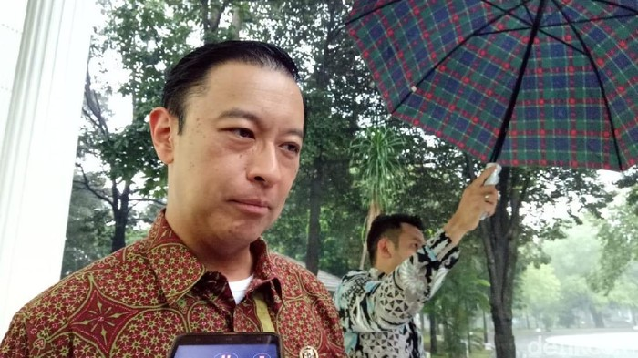

Debat cawapres 2024 semakin memanas
Calon wakil presiden (cawapres) nomor urut 02 Gibran Rakabuming Raka menyenggol nama Tom Lembong saat debat keempat Pilpres 2024. Gibran menyebut nama Tom Lembong saat melempar pertanyaan terkait LFP (lithium ferro-phosphate) kepada cawapres nomor urut 01 Muhaimin Iskandar atau Cak Imin. Tom Lembong memberi jawaban menohok terhadap Gibran yang beberapa kali menyentil namanya saat debat tersebut. Pria bernama lengkap Thomas Trikasih Lembong itu menyatakan dirinya sudah tujuh tahun memberikan contekan untuk ayah Gibran, yakni Presiden Joko Widodo (Jokowi). "Saya sangat mengapresiasi ucapan Mas Gibran yang berkali-kali menyebut nama saya. Ya, tentunya selama tujuh tahun saya membuat contekan dan menulis pidato, dan materi bicara bagi ayahnya, Pak Presiden," kata Tom Lembong seperti dikutip detikFinance, Senin (22/1/2024) Baca artikel detikbali, "Jawaban Menohok Tom Lembong Saat Disenggol Gibran di Debat Cawapres"
Tom Lembong pernah dipercaya Jokowi untuk menjadi Menteri Perdagangan (Mendag) menggantikan Rahmat Gobel saat reshuffle kabinet, Agustus 2015. Posisi Tom di kursi Mendag kemudian digantikan oleh politikus Partai NasDem Enggartiasto Lukita pada Juli 2016. Selanjutnya, Tom pindah ke kursi Kepala Badan Koordinasi Penanaman Modal (BKPM). Jabatan Tom sebagai Kepala BKPM kemudian digantikan oleh Bahlil Lahadalia pada Oktober 2019. Tom Lembong menilai Gibran sedang merindukan dirinya yang sudah bukan bagian dari pemerintah. Ia menegaskan kini mendukung capres-cawapres nomor urut 01, Anies Baswedan-Cak Imin (AMIN). "Saya bisa mendeteksi apa, sebuah rasa rindu mungkin ya, bahwa saya tidak lagi di situ, untuk memberikan masukan-masukan yang berkualitas. Tapi sekarang yang menerima manfaat dari masukan saya adalah Pak Anies dan Pak Muhamin," imbuh Tom Lembong. Wakil Ketua Tim Nasional (Timnas) AMIN itu kemudian menanggapi pernyataan Gibran yang menyebut agar bersikap optimistis dan tidak memberikan komentar-komentar yang menakutkan. Menurut Tom Lembong, hal yang lebih penting dari sekadar optimisme adalah realistis. "Jadi fakta data. Apakah itu menyenangkan atau pahit, itu hal kedua, terpisah. Tapi kami harus menyampaikan apa adanya dan itu justru yang saya banggakan selama tujuh tahun membuat contekan-contekan, masukan-masukan kepada Pak Presiden. Kami menyampaikan apa adanya, hal-hal pahit, ya karena itu permulaan dari perubahan dan perbaikan," pungkasnya.Sebelumnya, Gibran menyebut nama Tom Lembong saat menanggapi ketidakpuasan Cak Imin atas jawaban yang dia sampaikan terkait kawasan bioregional. Gibran merasa sudah menjawab pertanyaan cawapres nomor urut 01 itu. Baca artikel detikbali, "Jawaban Menohok Tom Lembong Saat Disenggol Gibran di Debat Cawapres"